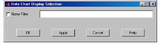

Data Chart Menu Options
To access data chart specific options, select Data Chart and one of the following menu options:
• Show All
• Attributes
• Operations
• Hide All
• Attributes
• Operations
• Show Built-in Relations
The Built-in Relations dialog box appears.
a Select the relation types you want to display.
b Click OK.
• Show Other Relations
The Filter Relations dialog box appears.
a To display relations that match a string, select Filter and type a string in the field.
b To show inheritance relations, select Show Inherited Relations.
Note: This option is enabled by default for other views.
c Click Apply, then OK.
• Show Members
The Data Chart Display Selection dialog box appears.

a To display only those members whose name matches a specified string, enter a string in the Name filter field.
Note: Strings are case-sensitive.
b Click Apply, then OK.